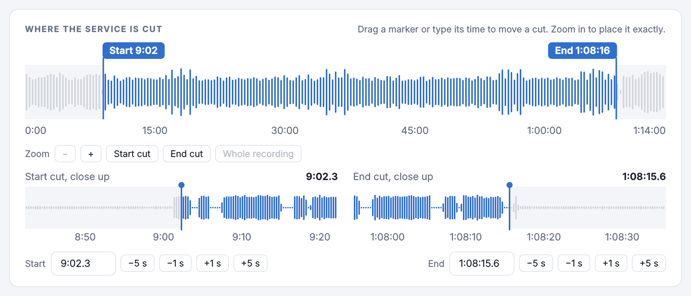

Your Sunday service, ready for the radio
ChurchRadio Studio is a free app for churches that put their service on the radio, a podcast or a website. Drop the week's recording on the window and it makes one ready-to-air MP3.
Free, for Windows, Mac and Linux. No account, nothing to pay.
- Your intro
- The service, cut at its start and end
- Songs that fill the rest
- 59:58

How it works
A few minutes each week
The app listens to the recording, so nobody has to sit with an audio editor on Sunday afternoon.
Drop the recording
An MKV, MP4, WAV, MP3 or M4A file, straight from the camera or the sound desk.
The app finds the service
It hears your opening words and the congregation's last answer, and cuts there.
It fills the hour
Your own songs are added until the broadcast is as long as your slot.
Send the MP3
One file, named with your program and the date, ready for the station.
Features
What it does for you
Made for one job, the weekly church broadcast, and set up with the words your own church says.
Cuts the organ prelude
The broadcast starts at your opening words, such as Good morning
. A choir anthem before them is kept.
Ends at the congregation's answer
Go now in peace.
Thanks be to God.
The service ends there, not in the talk and footsteps after.
Fills the time, to the half minute
Songs are chosen to reach your broadcast length and never run more than 30 seconds over. They play back to back, with no gaps.
Songs that fit the church year
Advent songs in Advent, Easter songs at Easter, patriotic songs on national holiday weekends. Songs used in recent weeks go last.
Sound made for radio
A broadcast compressor and limiter even out the quiet and loud parts, and long silences are shortened.
Stays on your computer
The speech recognition is downloaded once and then works offline. Nothing about your services leaves the computer.
Helps with song permissions
The Songs page can look up which hymns are in the public domain, and keeps the permissions you have for the others.
Can run by itself
Have your computer make the broadcast on a schedule each week, with no one at the keyboard.
Light or dark, and kept up to date
The app follows your computer's look, and tells you when a new version is ready to install.
You stay in charge
See the cuts, and move them
The app draws the recording by its loudness. The bright part is broadcast; the dim parts are cut off.
- Drag a marker, nudge it by a second, or type its time.
- Click anywhere to listen from that spot; the space bar plays and pauses.
- Zoom in to place a cut to a tenth of a second.
- Check first, if you like: look over the cuts before the MP3 is written.


Your songs
Your own music, sorted by season
Point the app at the folders that hold your recordings. It works out each song's title and season, and a short setup wizard takes care of the rest: your program's name, your intro, and the words said in your church.
Download ChurchRadio Studio
Free for any church. These links always give the newest release. The first start needs internet once, to download the speech models (about 620 MB); after that the app works offline.
ChurchRadio-Studio-Setup.exe
MacApple silicon (M1 or newer), macOS 14 or newerChurchRadio-Studio-macOS.dmg
Linux64-bit, Ubuntu 22.04 or newer, or similarChurchRadio-Studio-Linux-x86_64.tar.gz
The installers are not code-signed yet, so Windows and macOS ask you to confirm the first time. The install guide shows what to click.